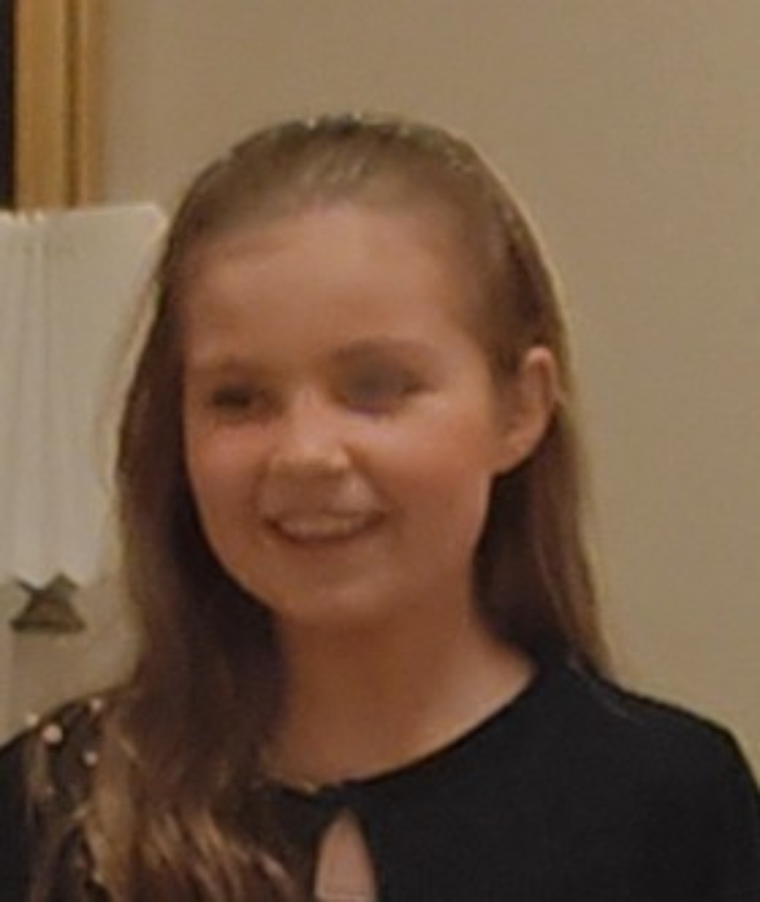

STAFET FOR LIVET
LUNA 2 · BUILD 023
Gem de 4 faste punkter først📍 Trin 1 · Optag faste punkter
Gå én omgang og gem de fire punkter undervejs. Når alle fire er gemt, bliver testen automatisk klar.
🏁 Trin 2 · Test punkterne
Start ved start/mål og gå en hel omgang. Efter mål må du stå stille, vende rundt eller gå lidt tilbage mod checkpoint 4 uden falsk snydealarm.
Næste: Gem alle 4 punkter
GPS-statusIkke startet
Nøjagtighed—
Latitude—
Longitude—
Afstand til næste—
GPS-opdateringer0
Accepterede0
Afviste0
BeskedIngen
LogTom
Luna 2 · Build 023 · Efter mål-tilstand + snydetest